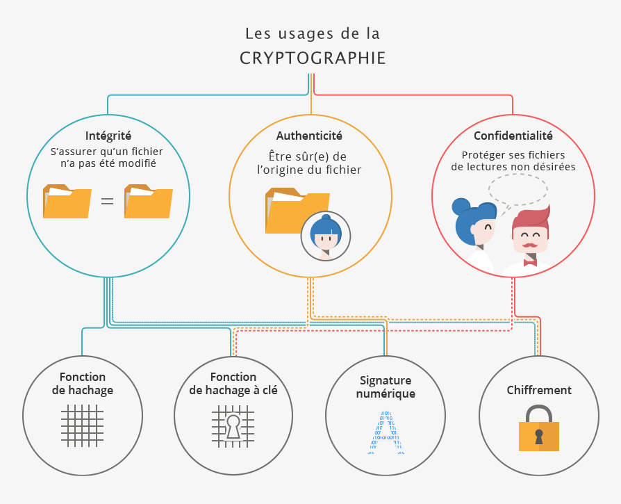

Cryptologie

Historiquement, la cryptologie correspond à la science du secret,
c'est-à-dire au chiffrement. Aujourd'hui, elle s’est élargie au
fait de prouver qui est l'auteur d'un message et s'il a été
modifié ou non, grâce aux signatures numériques et aux fonctions
de hachage.
Étymologiquement, la cryptologie est la science (λόγος) du secret
(κρυπτός) . Elle réunit la cryptographie (« écriture secrète ») et
la cryptanalyse (étude des attaques contre les mécanismes de
cryptographie). La cryptologie ne se limite plus aujourd’hui à
assurer la confidentialité des secrets.
Elle s’est élargie au fait d’assurer mathématiquement d’autres
notions : assurer l’authenticité d’un
message (qui a envoyé ce message ?) ou encore assurer son
intégrité (est-ce qu’il a été modifié
?). Pour assurer ces usages, la cryptologie regroupe quatre
principales fonctions : le hachage avec ou sans clé, la signature
numérique et le chiffrement. Pour expliquer la cryptologie, nous
utiliserons dans nos exemples les personnages traditionnels en
cryptographie : Alice et Bob.